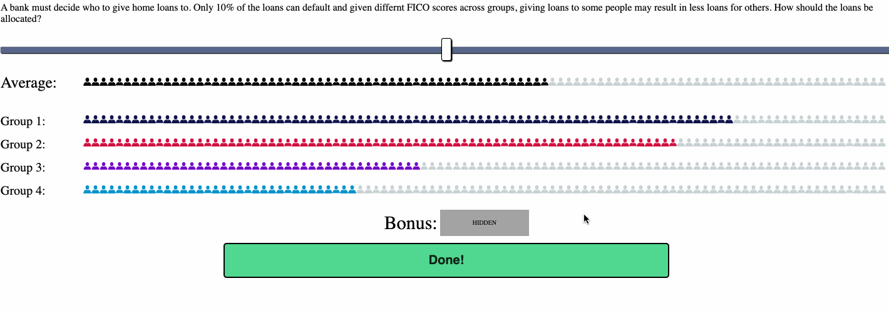

The Computational Cognition Lab is conducting a this research program.
You have been asked to participate because you are an undergraduate here at UCSD.
PROCEDURES. If you agree to participate in this study, the following will happen to you:
1. You will sit at the computer and read a prompt.
2. You will communicate your decision via a slider, then continue to the next question.
RISKS. No potential risks or discomforts are anticipated except for the possibility that some tasks may be
slightly repetitive.
PAYMENT/REMUNERATION. In consideration of your time and inconvenience, you will receive 1 hour of course credit. The procedures and length of participation will last approximately one hour.
RIGHTS. You may call the UCSD Human Research Protection Program at 858-657- 5100 to ask about your rights as a research subject or to report research-related problems.
BENEFITS. There will be no direct benefit to you from these procedures. However, the investigator may learn more about basic questions pertaining to memory, perception, cognition, and learning. This knowledge may have benefits to society in fields ranging from education to design of airplane cockpits, but these benefits will be indirect.
EXPLANATION. The researcher has explained this study to you and answered your questions. If you have questions or research related problems, you may reach Edward Vul at 858-534- 4401.
VOLUNTARY NATURE OF PARTICIPATION. Participation in research is entirely voluntary. You may refuse to participate or withdraw at any time without penalty.
CONFIDENTIALITY. Research records will be kept confidential to the extent allowed by law. As with all research, there is also the possibility of loss of confidentiality. Information from participants will be identified by a study number. The database which relates the study number to a specific subject will be maintained in the study coordinators office.
COPY OF CONSENT. You have received a copy of this consent document to keep and a copy of the Experimental Bill of Rights.
Click the button below if you agree to participate.
Welcome to the Algorithmic Fairness Task.
We are working with an algorithm developer to understand human intuition on trade-offs in a variety of settings.
Sometimes these trade-offs are tricky, so we need your help to make better algorithms!
During this task you will be presented with several situations and decisions.
In each round, you will be asked to decide how to allocate resources to multiple groups.
We ask that you read the situation completely then interact with the slider to communicate your decision.
Please read each task completely. Also pay attention to how the numbers change, as this may not be the same for each trial.
The Task: 
Once you have finished making your choice, you may proceed to the next trial.
Enter your demographics information here:
Age:
Gender:
Male
Female
Other
Please share your thoughts on the experiment: